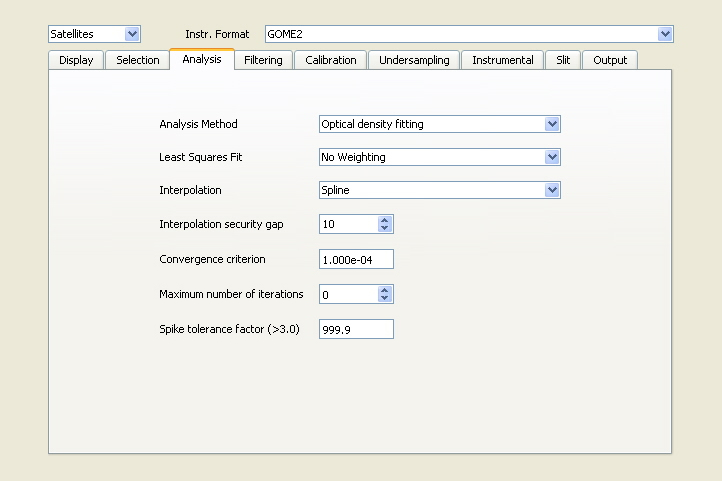

QDOAS Projects Properties : Analysis page

Default options of this page are valid for all applications. Expert users can change them to perform some tests. Further details on the retrieval algorithms can be found in the Description of Algorithms chapter of the QDOAS Software User Manual.
Available retrieval methods are :
- Optical density fitting;
- Intensity fitting (Marquardt-Levenberg+SVD);
These methods differ by the way the Beer-Lambert's equation is expressed and resolved. Usually the Optical density fitting is preferred to analyze spectra.
The fit can be weighted if instrumental uncertainties on measurements are known.
Linear and cubic Spline interpolations are implemented. Spline interpolation is recommended.
Convolution/filtering/interpolation operations could introduce edge effects if cross-sections are strictly defined on the different analysis spectral intervals. In order to avoid that, it is recommended to add some extra pixels on both sides of the final grid. The security gap determines this number of pixels. If the selected filter requires a larger number of additional pixels, the gap is recalculated by QDOAS.
The purpose of the iterative Marquardt-Levenberg algorithm used to resolve the DOAS equation is to find the values of unknown variables that minimize the « chi square » (see equation in the Description of Algorithms section of the QDOAS Software User Manual). It assumes to start from an initial solution and to improve it as far as the chi square calculated at each iteration decreases. If after two successive iterations, the variation of the chi square is less than the convergence criterion, the solution is considered good enough and the algorithm stops.
Usually a value of 1e-3 or 1e-4 is selected for the convergence criterion. The higher is this value, the faster will be the convergence to the solution but the accuracy of the results could be affected.
The maximum number of iterations
The number of iterations needed to analyze a spectrum is determined by the convergence speed of the Marquardt-Levenberg algorithm for this spectrum. For some tests, it is sometimes useful to limit it. A value of « 0 » doesn't limit the number of iterations.
QDOAS can try to automatically remove bad data points, such as satellite measurements affected by the South Atlantic Anomaly, from the fit. To do this, QDOAS calculates the average magnitude of the residuals after the fit. If pixels are found with a residual exceeding this average by more than the spike tolerance factor, QDOAS will remove these pixels from the analysis and calculate a new fit. This procedure is applied iteratively until no residuals exceed the average by more than the given tolerance factor. The analysis results contain a list of all pixels that were removed. This feature should be used with caution, as choosing a too low tolerance factor might exclude valid data points from the fit.